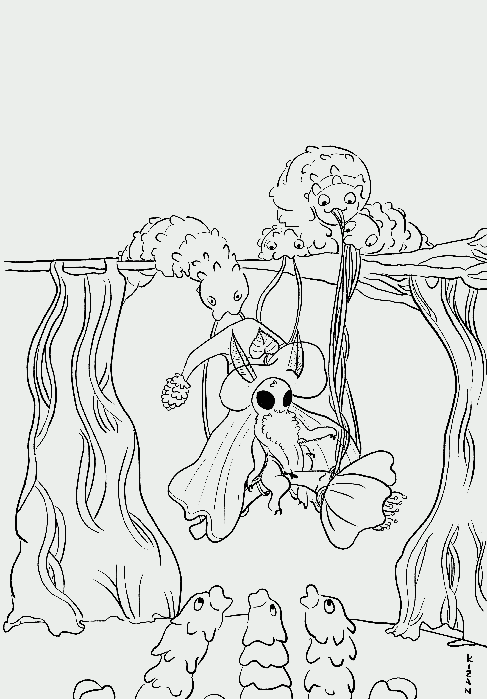
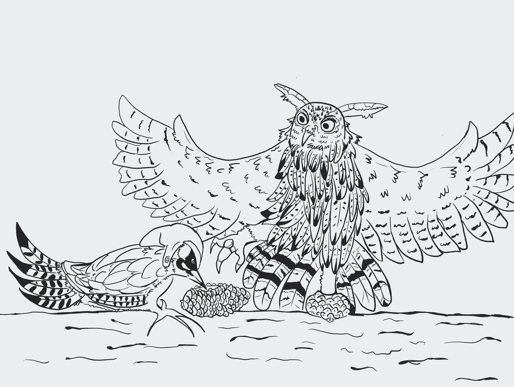
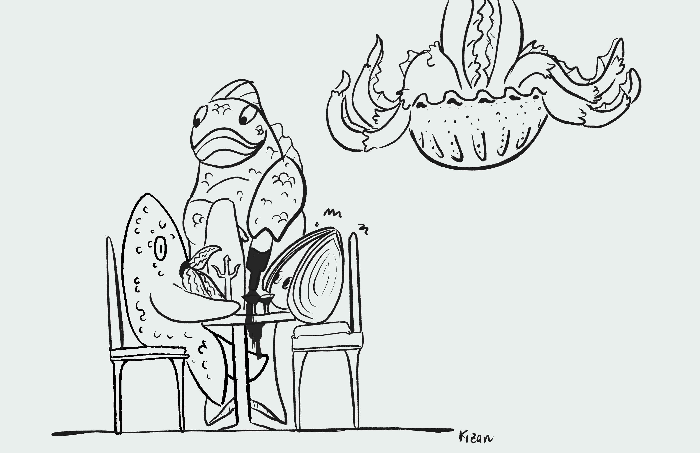
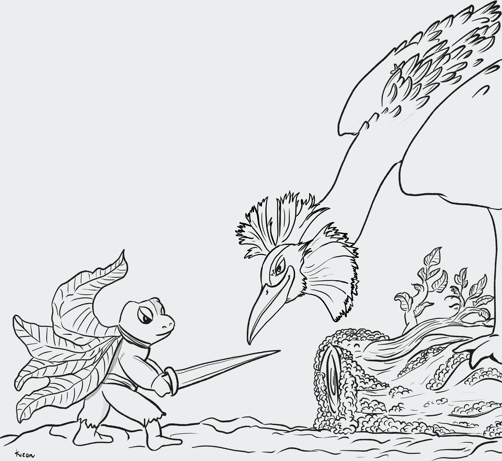
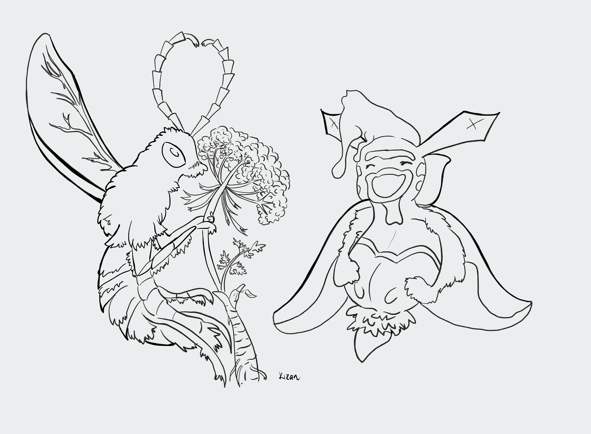

Leonardo Serantoni
alias
Kizan
Autore e illustratore
Scorci sul mondo animale e vegetale
Messa in scena (forse un po' bizzarra) di curiosità naturalistiche
Bachi da seta a teatro
Piccoli bachi da seta a teatro. La falena interpreta una strega che prova l'ebrezza del primo volo su un fiore di gelso.

Con il millenario addomesticamento del baco da seta da parte degli umani, le falene di questa specie hanno perso la capacità di volare. Le larve si nutrono esclusivamente di foglie di gelso e sono proprio quelle che producono il bozzolo di seta.
Il picchio ciabattino
Un Picchio verde prepara a un Gufo reale delle belle ciabatte con due pigne.

Una traccia che può mostrare la presenza del Picchio verde è proprio la pigna di pino marittimo svuotata all'interno, in questo modo che la rende simile a una ciabatta.
Fuori lo stomaco
Una stella marina non riesce a trattenere il suo stomaco di fronte alla sua amata cozza. Il cameriere sta versando il Nero di Seppia, ma si è distratto. Anche la medusa bioluminescente è un dipendente del ristorante.

Le stelle marine digeriscono le loro prede facendo fuoriuscire il loro stomaco per digerirle all'esterno del proprio corpo. Alcune meduse sono bioluminescenti: questa in particolare è una Pelagia noctiluca.
Duello palustre
Una ranocchietta sfida uno Svasso maggiore.

Talvolta, le rane sono preda degli Svassi.
Fraintendimenti
Una vespa porta in dono un fior di carota selvatica alla sua innamorata.

Il fiore della Vesparia (Ophrys apifera) imita l’addome di una vespa (ormai estinta). Seppur privo di nettare, il fiore attira vari imenotteri impollinatori. Imita non solo la villosità e i colori ma anche i feromoni emessi dalla femmina. Dopo la copula, il maschio si depositerà carico di polline su un altro fiore. La vespa rappresentata è Eucera pulveracea.
Bibliotecario affamato
Pesciolino d'argento in preda a un attacco di fame nervosa.

I pesciolini d'argento si nutrono di zuccheri e amidi. Per esempio, sono ghiotti della destrina usata negli adesivi. Si nutrono di francobolli, rilegature dei libri, polvere, cotone, etc.